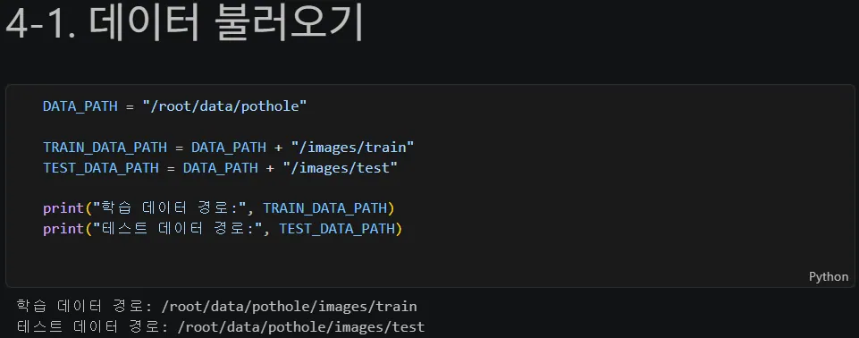
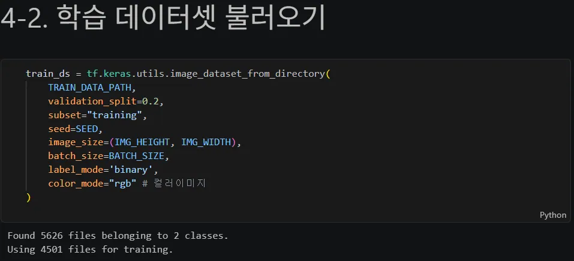
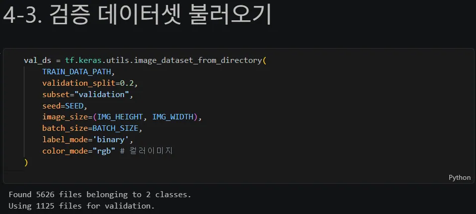
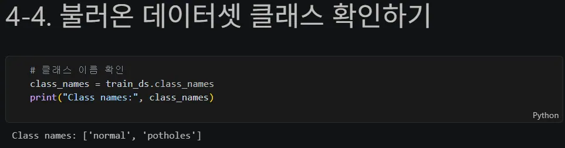
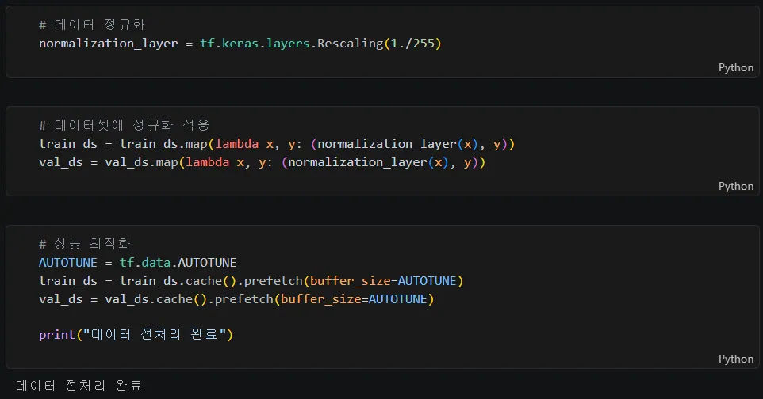
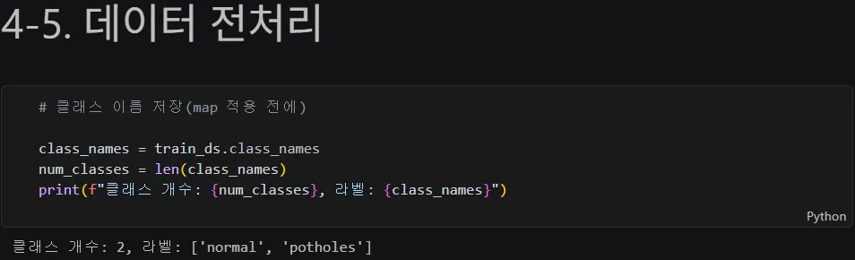
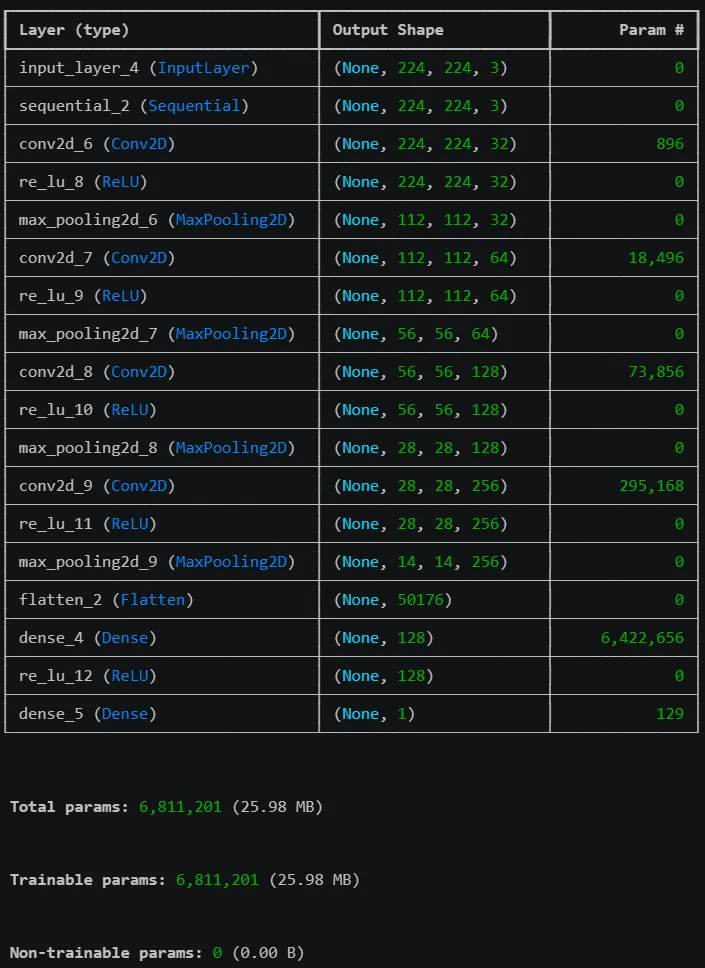
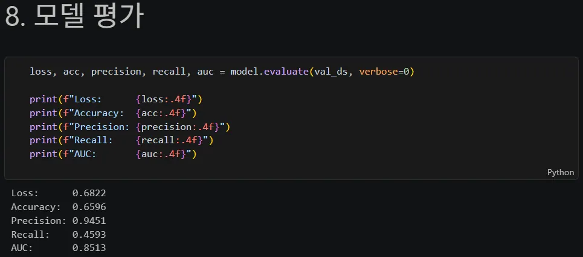
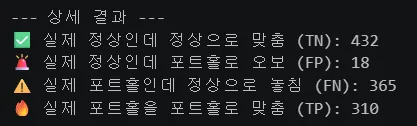
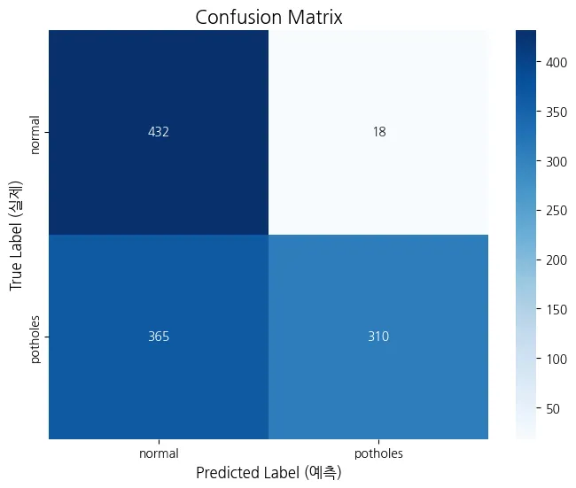

정상 클래스에 1.33의 class_weight를 주는 이유는?
답을 고르면 바로 해설이 나타납니다.
Part 4 · Pothole Baseline
실사 도로 사진을 224×224로 맞추고 네 개의 합성곱 블록, 두 콜백, 클래스 가중치로 포트홀 탐지 베이스라인을 만듭니다.
Input · S148–150
ResNet, VGG, MobileNet 등 널리 쓰이는 사전학습 모델의 표준 입력 크기와 맞습니다. 지금은 직접 만든 CNN이지만, 이후 전이학습으로 확장할 때도 같은 입력 파이프라인을 이어갈 수 있습니다.
Code 01 / 22
TensorFlow가 GPU 메모리를 한 번에 점유하지 않도록 필요한 만큼만 늘려 씁니다.
Code 02 / 22
파일·난수·배열·TensorFlow·시각화와 평가 지표에 필요한 모듈을 불러옵니다.
Code 03 / 22
재현 가능한 비교를 위해 Python, NumPy, TensorFlow의 시드를 42로 맞춥니다.
Code 04 / 22
ResNet, VGG, MobileNet 등 거의 모든 사전학습 모델이 표준 입력으로 쓰는 224×224를 채택하고 배치 크기는 코드 원문대로 128로 둡니다.
Code 05 / 22

정상과 포트홀 이미지가 들어 있는 데이터 경로를 지정합니다.
Code 06 / 22

폴더를 클래스 이름으로 읽고 80%를 학습 데이터로 분리합니다. RGB 실사 이미지이므로 채널은 3개입니다.
Code 07 / 22

같은 seed로 나머지 20%를 검증 데이터로 분리합니다.
Code 08 / 22

알파벳순으로 normal=0, potholes=1이 됩니다. 이 순서는 class_weight, sigmoid 해석, 혼동행렬 라벨의 기준입니다.
Code 09 / 22



map() 전에 클래스 이름을 백업하고 0~255 픽셀을 0~1로 정규화합니다. cache와 prefetch로 다음 epoch와 다음 배치를 준비합니다.
Code 10 / 22
학습 배치의 자료형·범위·모양과 라벨을 출력하고 9장을 눈으로 확인합니다.
Code 11 / 22
검증 배치에도 같은 확인을 반복해 전처리와 라벨 순서가 일치하는지 살핍니다.
Code 12 / 22
좌우 반전·회전·확대·이동에 밝기와 대비 변환을 더합니다. 실사에서는 날씨·조명 변화에 대응하는 광학적 증강이 결정적입니다.
Code 13 / 22
네 개 합성곱 블록으로 224→112→56→28→14로 줄인 뒤, 128개 뉴런과 sigmoid 1개로 정상/포트홀을 분류합니다.
Code 14 / 22
학습률 0.0001의 Adam과 binary crossentropy를 쓰고 accuracy, precision, recall, AUC를 함께 기록합니다.
Code 15 / 22

모델 요약에서 총 6,811,201개 파라미터와 각 합성곱 블록의 출력 크기를 확인합니다.
Code 16 / 22
CoMNIST와 달리 콜백이 두 개입니다. EarlyStopping은 val_auc가 멈추면 종료하고, ReduceLROnPlateau는 정체 시 학습률을 1/5로 줄입니다.
Callbacks · S163
EarlyStopping은 더 나아지지 않을 때 학습을 끝내고, ReduceLROnPlateau는 끝내기 전에 학습률을 낮춰 골짜기 주변을 더 세밀하게 탐색합니다.
val_auc는 클수록 좋은 지표라 두 콜백 모두 mode="max"가 필요합니다. loss를 감시할 때의 기본 방향과 반대임을 확인시킵니다.
Code 17 / 22
포트홀 4,025장과 정상 3,010장의 불균형 때문에 정상 클래스의 손실에 1.33배 가중치를 줍니다. EarlyStopping이 있으므로 100 epoch는 상한선입니다.
Balance · S164
포트홀 4,025장, 정상 3,010장으로 포트홀이 약 1.33배 많습니다. 적은 정상 클래스의 손실에 1.33배를 주어 “항상 포트홀”이라고 답하는 편법을 불리하게 만듭니다.
Code 18 / 22

검증 데이터에서 loss, accuracy, precision, recall, AUC를 계산합니다.
Code 19 / 22
학습과 검증의 다섯 지표를 함께 그립니다. 안전 문제에서는 포트홀을 놓치지 않는 Recall을 특히 봅니다.
Code 20 / 22


임계값 0.5로 확률을 이진화하고 혼동행렬에서 정상/포트홀의 정답과 오류를 나눕니다.
Code 21 / 22
예측 확률 히스토그램으로 0.5 주변에 애매한 표본이 얼마나 모이는지 확인합니다.
Code 22 / 22
파일명, 실제 라벨, 예측 확률, 예측 라벨, 정답 여부를 표로 묶어 오분류 사례를 찾습니다.
Quick Check
답을 고르면 바로 해설이 나타납니다.
답을 고르면 바로 해설이 나타납니다.